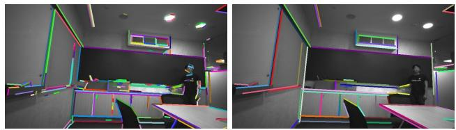
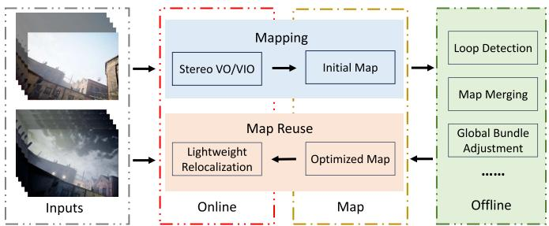
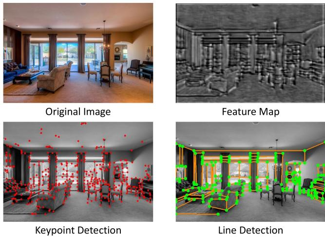

原图注（Fig. 1）：The historical trajectory of line flow visualization. The magic cube appears from the left… We pick the bottom line of a Rubik's Cube to trace… The red lines are the historical tracks traced in successive frames.
怎么看这张图：这是「线流」的直观演示——魔方底边被连续多帧追踪，红线是它的历史轨迹。一眼能看出「一条线被跨帧追踪成轨迹」，正是 LOFT 连续性的证明。
这张图在画什么：左边画同一条空间直线在前后两帧里端点不同、但方向一致；右边画「观测平面法向 n」与「重投影平面法向 n~」之间的夹角，这个夹角就是 EPLF 的线残差。 怎么看这张图：① 左图说明「端点会变，但线的方向（朝向）稳定」；② 右图说明残差只用法向量夹角，根本不碰端点。 要记住的一句话：端点无关残差 = 用线的方向（两个平面的法向夹角）代替端点的位置，从而无视端点不确定。
实验与局限：在 EuRoC / TUM VI / KAIST VIO 上，无回环比 VINS-Mono 提升 35.83%、比 PL-VINS 28.54%。它没有专门的光照鲁棒机制——仅靠线本身比点稳，依赖 VINS-Mono 框架。
原图注（Fig. 4）：Line matching of AirVO in challenging scenes. Matched lines are drawn in the same color. Circles on a line are the points associated with the line.
怎么看这张图：同色线＝同一条线，线上的圆＝关联的点。这正是「线借点的匹配结果」的可视化——线能匹配上，靠的是上面挂的点被 SuperPoint+SuperGlue 稳稳匹配了。

原图注（Fig. 3）：Lines detected by LSD (left) and by AirVO (right). We merge unstable short lines into stable longer lines.
怎么看这张图：左是 LSD 检出的碎短线，右是 AirVO 合并后的长线。对着第 3 节「端点不确定」的麻烦看——把短线段合并成长线，正是工程上缓解端点抖动的常用手段。
诚实地说：PLNet 统一检测与多级重定位是真新模块，但整体属于「把 VO 升级成完整 SLAM + 工程部署（TensorRT）」的整合型工作，并非新理论。光照鲁棒核心思想继承自 AirVO（学习特征 + 结构线 + 7 种光度增强 + 结构图重定位）。

原图注（Fig. 1）：Proposed system consists of three main parts: Online stereo VO/VIO, offline map optimization, and online relocalization.
怎么看这张图：和 AirVO 最大的区别就在这三块——AirVO 只有在线 VO，AirSLAM 多了「离线地图优化」和「在线重定位」，这正是它从 VO 升级为完整 SLAM 的结构证据。

原图注（Fig. 2）：We visualize the feature map… detected keypoints… and the detected structural lines… The overlap of keypoints and junctions… inspire the design of our PLNet.
怎么看这张图：右下的红色结构线 + 绿点（端点/节点）正是 PLNet 要检的目标。它检的是「结构线」（门框、墙角这类），而不是墙上的花纹梯度线——这正是它抗光照的关键设计来源。